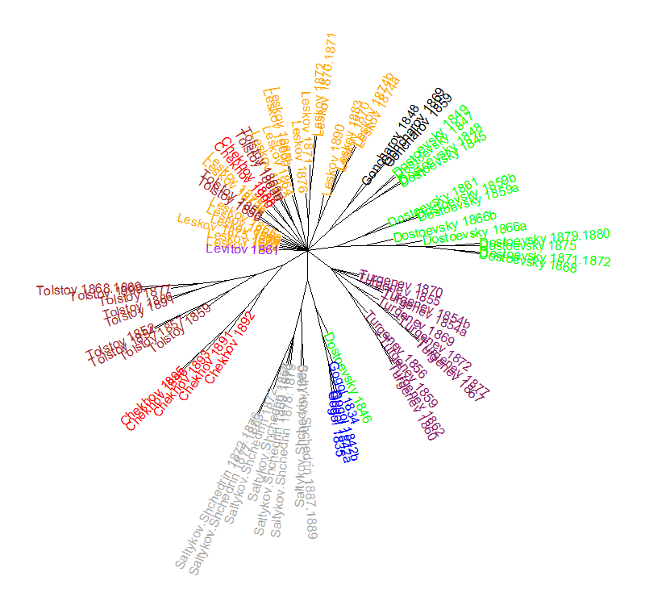

Stylometry
..or how do you know it's Shakespeare?
Стил(о|е)метрия

But first a reminder:
Agenda for today
- Sweets from yesterday! 🍰 🍬
- What is stylometry
-
X-men:OriginsStylometry Origins - State of the art & applications
- (finally!) Stylo hands-on
- Weekend 🌴
Stylometry
is the statistical analysis of variations in literary style between one writer or genre and another
Oxford Dictionary
in all their variety of material and method, have two features in common: the <...> texts they study have to be coaxed to yield numbers, and the numbers themselves have to be processed via statistics.
M. Eder, M. Kestemont, J. Rybicki. ‘Stylo’: a package for stylometric analyses
Stylometric studies
underlying stylometric studies is that authors have an unconscious as well as conscious aspect to their style
Encyclopaedia of Statistical Sciences
The main assumption
How?
По-видимому, в разных стилях книжной и разговорной речи <...> частота употребления разных типов слов различна. Точные изыскания в этой области помогли бы установить структурно-грамматические, а отчасти и семантические различия между стилями <...>
В.В. Виноградов (1938) Введение в грамматическое учение о слове
It's mostly about frequencies
- Words/word forms
- especially function words
- Symbol N-grams
- POS tags
- Syntactic structures
- Metric structures
Frequencies of
- general vocabulary diversity
- hapax legomena (see A. Q. Morton. 'Once. A Test of Authorship Based on Words Which Are Not Repeated in the Sample')
- sentence length
- punctuation
- (in unedited text) spelling mistakes and specifics
Other features
Why?
Motivation, or why try and measure style?
- Authorship disputes
- Exploring genre differences
- Co-authorship studies
- Exploring gender/age differences
- Capturing human stylome/idiostyle
- Translation studies
- Forensic linguistics, security and anonymity
Origins
- authorship disputes and the rise of quantitative research on style
- early stylostatistics/stylometrics/stylometry
- XX century: from failures to successes
Authorship disputes
Presumably, each national literature has its own famous unsolved attribution case, such as the Shakespearean canon, a collection of Polish erotic poems of the 16th century ascribed to Mikołaj Sęp Szarzyński, the Russian epic poem The Tale of Igor’s Campaign, and many other.
Eder M. (2011) Style-markers in authorship attribution: A cross-language study of the authorial fingerprint.


Authorship disputes
Presumably, each national literature has its own famous unsolved attribution case, such as the Shakespearean canon, a collection of Polish erotic poems of the 16th century ascribed to Mikołaj Sęp Szarzyński, the Russian epic poem The Tale of Igor’s Campaign, and many other.
Eder M. (2011) Style-markers in authorship attribution: A cross-language study of the authorial fingerprint.
Слово о полку Игореве
Уже двести лет не прекращается дискуссия о том, что представляет собой «Слово о полку Игореве», — подлинное древнерусское произведение или искусную подделку под древность, созданную в XVIII веке. <...> Гибель единственного списка этого произведения лишает исследователей возможности произвести анализ почерка, бумаги, чернил и прочих материальных характеристик первоисточника. Наиболее прочным основанием для решения проблемы подлинности или поддельности «Слова о полку Игореве» оказывается в таких условиях язык этого памятника.
A.А. Зализняк. "Слово о полку Игореве": взгляд лингвиста.
А. А. Зализняк

tvkultura.ru
Attribution through style
Lorenzo Valla (1407 – 1457)
- Italian humanist, rhetorician, educator and Catholic priest
- in 1439 proved that the Donation of Constantine was a forgery
- demonstrated that it could not have been written in the era of Constantine I (IV century), as its style dated to XIII century

wikipedia.org
Quantifying style
-
1851 — A. De Morgan suggests mean word-length as an authorship feature
-
1873 — New Shakespeare Society (Furnival, Fleay et al)
-
1887 — T. Mendenhall, The Characteristic Curves of Composition, the first known work on quantitative authorship attribution

Early stylometry
-
1867 — Campbell L. The Sophisties and Polilicus of Plato.
-
1880 — W. Dittenberger,
Sprachliche Kriterien für die Chronologie der Platonischen Dialoge
-
1890 — W. Lutosławski, Principes de stylométrie

Early stylometry in Russia
-
1915 — Морозов Н.А. Лингвистические спектры (likely inspired by Lutoslawski)
-
Acknowledges the importance of function words (see pic.)


The amazing Morozov

The amazing Morozov
So this guy wrote 'The Linguistic Spectres'
- Ему оппонировал сам Марков (the Markov!)
- 1916 — Марков А.А. Об одном применении статистического метода ('On the application of a certain statistical method')
Stylometry advances
-
1937 — Bolling, G.M. The Past Tense of 'To Be' in Homer
-
1938 — Carroll, J.B. Diversity of vocabulary and the harmonic series law of word-frequency distribution

From spoofs & failures...
- in 1901 a scholar attempted to use John Fletcher's preference for "'em," the contractional form of "them," as a marker to distinguish between Fletcher and Philip Massinger in their collaborations—but he mistakenly employed an edition of Massinger's works in which the editor had expanded all instances of "'em" to "them"
- A lot of speculation on Shakespeare could not stand scientific tests

...to successes
the breakthrougs came in the 1960-ies, as usual
Federalist papers
- 12 disputed papers (Hamilton or Madison)
- Mosteller F., Wallace D., (1963) Inference in an Authorship Problem.
- '<...> to solve the authorship question of The Federalist papers; and to propose routine methods for solving other authorship problems'.

Mosteller, Wallace, 1963

Mosteller, Wallace, 1963
- The function words of the language appear to be a fertile source of discriminators, and luckily the high-frequency words are the strongest.
- <...>it is important to have a variety of sources of material, to allow “between writings” variability to emerge

Mosteller, Wallace, 1963
In summary, the following points are clear:
- Madison is the principal author. These data make it possible to say far more than ever before that the odds are enormously high that Madison wrote the 12 disputed papers. <...>
- <...> While choice of underlying constants (choice of prior distributions) matters, it doesn’t matter very much, once one is in the neighborhood of a distribution suggested by a fair body of data.
Yep, size matters!
Размер имеет значение
J. F. Burrows
Most readers and critics behave as though common prepositions, conjunctions, personal pronouns, and articles — the parts of speech which make up at least a third of fictional works in English — do not really exist. But far from being a largely inert linguistic mass which has a simple but uninteresting function, these words and their frequency of use can tell us a great deal about the characters who speak them.
Preface to Computation into Criticism, 1987

Burrows Delta
- Benchmark since 2002
- Makes use of most frequent words/char.n-grams (though more complex features are also possible)
- Has relatively simple mathematics behind (counting z-scores)
Z-score
Text

where
- x – frequency of a word
- µ - mean frequency of a word in the whole corpus (collection of texts)
- σ - standard deviation
This actually works!
I checked for Russian:

This actually works!

Using Delta for authorship attribution
- Для всего тренировочного корпуса вычисляется N наиболее частотных слов; сохраняется частотность каждого.
- Далее для каждого текста в обеих выборках вычисляется z-score каждого слова
- z-score текстов из тестовой выборки сравниваются с z-показателями тренировочной
- обнаруживается текст из тренировочной, наиболее близкий классифицируемому.
- Его автор и объявляется автором классифицируемого текста.
Meanwhile in (Soviet) Russia
-
Виноградов В. В. (1961) Проблема авторства и теория стилей
- Мартыненко Г.Я. (1988) Основы стилеметрии (a monograph)
- Мухин М.Ю. (2011) Лексическая статистика и идиостиль автора: корпусное идеографическое исследование на материале произведений М. Булгакова, В. Набокова, А. Платонова и М. Шолохова
-
М. Ю. Михеев, Л. И. Эрлих (2017 доклад). Идиостиль и определение авторства текста по частотам служебных слов (people basically reinvented Delta... 🚲 🚲)
Modern stylometry
state of the art
Who wrote 'To Kill a Mockingbird'?
Харпер Ли

Oh, Real-Lee?
А Харпер ли?
Two books


Harper Lee and others


Тэй Хохоф
Труман Капоте
Харпер Ли и другие

Maciej Eder, Jan Rybicki (2016)
Харпер Ли и другие

Maciej Eder, Jan Rybicki (2016)
But the study of literature and authorship is not only who wrote what, and who didn’t: it can be also about similarities and differences between texts by different authors
Maciej Eder, Jan Rybicki (2016). Go Set A Watchman while we Kill the Mockingbird in Cold Blood, with Cats and Other People
One possible form of showing similarities is through networks
Harper Lee and others

Maciej Eder, Jan Rybicki (2016)
More about networks as visualisation technique in stylometry:
Maciej Eder; Visualization in stylometry: Cluster analysis using networks, Digital Scholarship in the Humanities, Volume 32, Issue 1, 1 April 2017, Pages 50–64, https://doi.org/10.1093/llc/fqv061
Harper Lee and others
Maciej Eder, Jan Rybicki (2016)
But we (apparently) can trace the editor dynamically

Maciej Eder, Jan Rybicki (2016)
Another case: Elena Ferrante

Maciej Eder, Jan Rybicki
And, of course, Shakespeare

Maciej Eder, Jan Rybicki
Or not...

Maciej Eder, Jan Rybicki
Henry VI

Maciej Eder, Jan Rybicki
Now it's official!

Немного хайпа

Stylometry in the news


Modern Stylometry:
NOT limited to attribution
- Exploring genre styles
- Dating texts & tracking literary evolution
- Author demographics (age, gender)
- Internal evolution of style
- Originals and translations
- Co-authorship problems
Stylochronometry

Maciej Eder, Jan Rybicki
Эволюция английской прозы

Maciej Eder, Jan Rybicki
Оригиналы и переводы
Оригиналы

Maciej Eder, Jan Rybicki
Переводы на английский

Maciej Eder, Jan Rybicki
Переводы на польский

Maciej Eder, Jan Rybicki
Переводы на польский

Maciej Eder, Jan Rybicki
Night and Day
by Virginia Woolf

Anna Kołyszko -> Magda Heydel


Maciej Eder, Jan Rybicki
Набоков

Jan Rybicki
Modern Stylometry:
Goes beyond literature

Beyond literature
-
Unabomber Theodore Kaczynski perpetrated a number of bomb attacks on universities and airlines between 1978 and 1995
-
Promised to stop if his 35,000-word anti-industrialist “manifesto” was published in major newspapers
-
Distinctive writing style and turns of phrase enabled him to be identified
Beyond literature
-
Скандал в Консервативной партии
-
Authorship of Primary Colors
-
Derek Bentley and his disputed murder ‘confession’
-
Adversarial stylometry
Adversarial stylometry
- deceiving authorship detection
- countermeasures to deception
- de-anonymization
- demographics detection
-
native language identification
- ...potentially allows you to harrypoterize your fanfic =)

And even this:

Okay, Danya, enough stories, just tell us how to do it!
Stylo
- R package for stylometry
- Stylometry with R: a suite of tools. M. Eder, M. Kestemont, J. Rybicki.
- Delta implementation
- ...and a handful of other measures
- nice GUI :)
Now let's get it installed
4. Choose the first mirror (Cloud) – though I think it does not really matter. Take ‘Estonia’ if you like J
5. If it worked, try launching the package with:
library(stylo)
6. If you get ‘stylo version: ’ and some numbers — congrats, you managed to install it. Elseif you get nothing — you have it launched already. Elseif you get errors — ask Danya for help
7. Finally, try:
stylo()
If you get this:

Success
Mac Users
- 8. Mac users might get XQuartz error. Download XQuartя here
Stylo GUI
Stylo: core functions
- stylo ()
- classify ()
- rolling.delta (), rolling.classify ()
- oppose ()
stylo () function
- explanatory analysis with stylometric features
- Clustering
- Principal Component Analysis
- MDS, tSNE and other beasts
- Consensus Tree (филогенетическое дерево)
- visualizations of said analyses
- wordlists, frequencies and other
classify ()
- text classification with stylometry features
- main tool for actual authorship attribution
- employs standard machine-learning algorithms
- requires two sets of documents
- training (primary_set)
- test (secondary_set)
rolling.delta ()
- dynamic changes in the text
- text window of adjustable size
oppose ()
- contrastive analysis
- words significantly preferred/avoided
- comparison studies (e.g. male vs female styles)
- when launching with non-latin script data:
oppose(corpus.lang="Other")
Oppose

Hands on
Installing Stylo
(you already did that, but JIC)
- open R console
- install.packages("stylo")
- library("stylo")
First experiment:
Exposing J.K. Rowling
- data ("galbraith")
- stylo(frequencies = galbraith)
Windows
- go to D:
- create
- >setwd ("D:\\stylo")
Mac/Linux
- go to 'Users/Katya'
- create folder 'stylo'
- >setwd ("/Users/Katya/stylo")
Setting working directory: example
Check if you are in the right ditectory:
- >getwd()
Now you can see
- wordlist
- frequency table
- ... and more (check 'OUTPUT' tab in Stylo GUI)
OK, Danya, but how do I put my own data into Stylo?
I've prepared some sample data for experiments
comparing Brontë sisters
- (виндоус) >setwd ("bronte")
- (мак/linux) >setwd ("bronte")
- >stylo()
Brontës meet... Ivanhoe
- (виндоус) >setwd ("..\\brontescott")
- (мак/linux) >setwd ("../brontescott")
- >stylo()
Quiet Flows the Don
- (виндоус) >setwd ("..\\don")
- (мак/linux) >setwd ("../don")
- >stylo()
authorship with classify()
- (виндоус) >setwd ("..\\test_classify")
- (мак/linux) >setwd ("../test_classify")
- >classify()
Если на Mac не отображается кириллица
- Открыть Terminal и выполнить там:
defaults write org.R-project.R force.LANG en_US.UTF-8
- ...либо прямо в R выполнить вот это:
>system("defaults write org.R-project.R force.LANG en_US.UTF-8")
For our collaborative Pushkin/Ershov project:
https://drive.google.com/drive/folders/1pRHmKN1oaWZZkMreYDeuXvF_De9IQCXc?usp=sharing
Stylometry
..or how do you know it's Shakespeare?
stylometry copy for voronovo
By danilsko
stylometry copy for voronovo
Slides for the stylometry session at the University of Helsinki DH crash-course (https://danilsko.github.io/DHelsinki/)
- 1